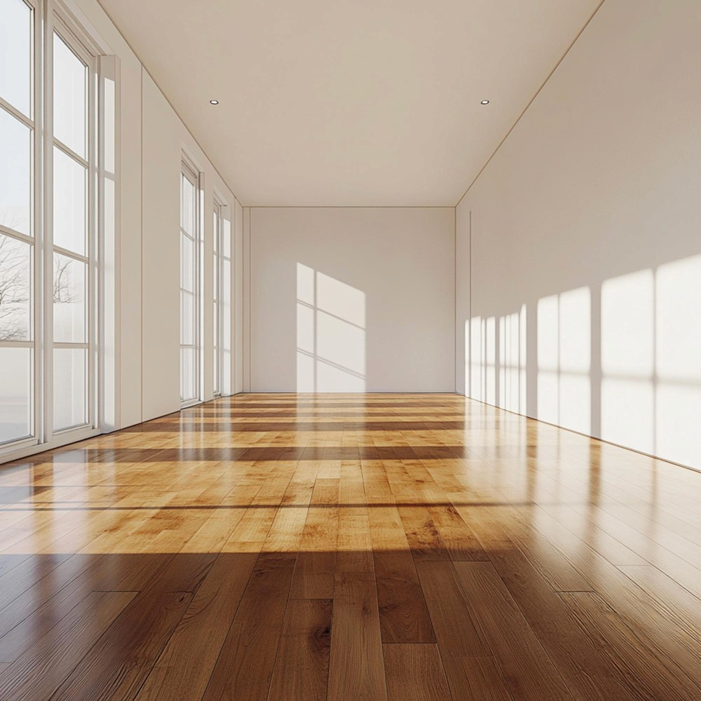

Pflegeleicht
Gut für Räume, die schnell und regelmäßig gereinigt werden.
PVC und Linoleum in München
PVC und Linoleum sind robuste Lösungen für Flure, Küchen, Praxen, Büros und Gewerbeflächen. Wir planen den Aufbau und verlegen sauber.
Wirtschaftliche Bodenbeläge
PVC und Linoleum sind besonders interessant, wenn Flächen hygienisch, robust und einfach zu pflegen sein müssen.
Wir achten auf den richtigen Untergrund, saubere Nähte, passende Sockelbereiche und belastbare Übergänge.

Objekt & Privat
Je nach Einsatzbereich empfehlen wir Bahnenware, Planken oder passende Objektbeläge mit der richtigen Beanspruchungsklasse.
Gut für Räume, die schnell und regelmäßig gereinigt werden.
Klare Material- und Verlegekosten für private und gewerbliche Flächen.
Geeignet für Laufzonen, Arbeitsräume und stark genutzte Bereiche.
Beläge

Vielseitig, wirtschaftlich und in vielen Optiken erhältlich.

Natürliche Anmutung, langlebig und beliebt in Objektbereichen.
Für Praxis, Büro und Gewerbe mit höherer Beanspruchung.

Ablauf
Wir prüfen Nutzung, Reinigung, Raumgröße und gewünschte Optik.
Der Untergrund wird gereinigt, geprüft und bei Bedarf gespachtelt.
Bahnen, Planken, Nähte und Anschlüsse werden fachgerecht ausgeführt.
Beratung in München
Wir beraten zu PVC, Linoleum und Objektbelägen und planen eine wirtschaftliche Umsetzung.
FAQ
Linoleum besteht aus überwiegend natürlichen Rohstoffen und ist besonders im Objektbereich beliebt.
Ja, mit passender Qualität und Beanspruchungsklasse eignet sich PVC gut für viele Gewerbeflächen.
Sehr wichtig. Unebenheiten können sich abzeichnen, deshalb prüfen und bereiten wir den Untergrund sorgfältig vor.
Je nach Material und Raumgröße lassen sich Nähte nicht immer vermeiden, sie werden aber sauber geplant und ausgeführt.
Ja, passende Leisten und Übergänge gehören auf Wunsch dazu.